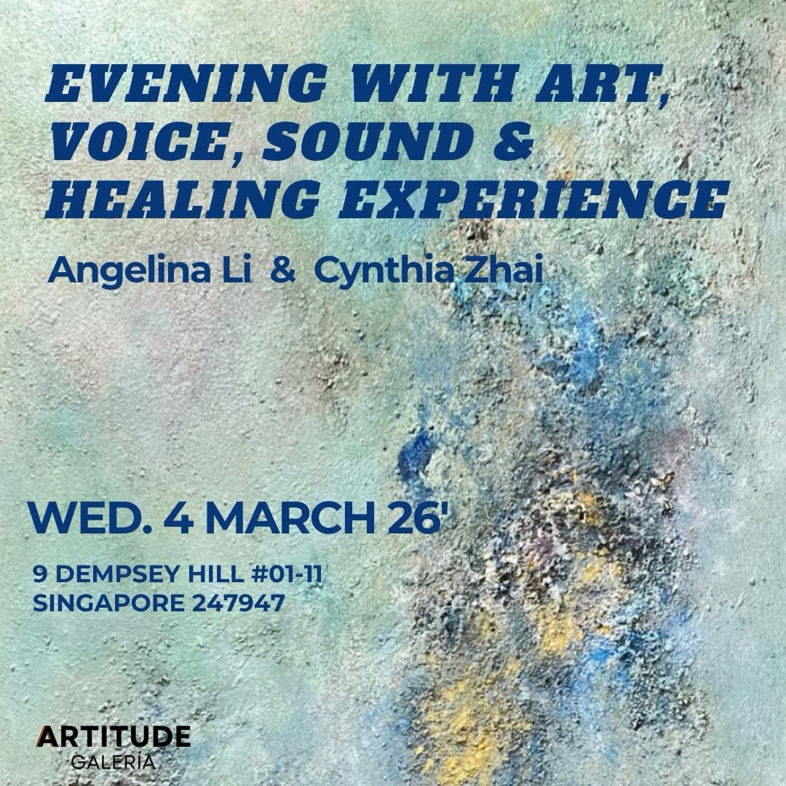

For the voice that deserves to be heard
A proposal for a voice that has already changed lives - and is ready to reach more of them.
01 / 07 The Part Where I Tell You What I Actually Noticed

There is something quietly striking about your account, Cynthia. You have 3,716 posts. That is not inconsistency. That is 16 years of showing up, of converting lived experience into something useful for professionals who feel invisible despite working harder than anyone in the room.
What I noticed first is that your origin story - the one about feeling talked over, about being bullied by a boss into silence, about English being your second language - is the most powerful thing you own. Not your credentials. Not "CSP" or "TEDx." The story of a woman who had every reason to stay quiet and chose instead to spend a decade and a half teaching others how not to.
"We teach what we needed to learn the most." - @cynthiazhai, from your most recent Reel
That line stopped me. It is not a quote you borrowed. It is your entire biography in nine words. And yet it appears once, in a post that received seven likes. Because the problem is not the depth of what you have to say. The problem is that the people who most need to hear it are not finding you yet.
I also noticed something more specific: you have built a brand around "quiet power" - a deliberate alternative to the rah-rah coaching world. Your clients describe you as grounded, calm, the opposite of forced. That positioning is rare and real. But right now, your Instagram does not quite show it. What I see is a feed that is working very hard to be helpful, and occasionally showing flashes of the more interesting, more personal Cynthia - and those are the posts that actually land.
"I attract those who resonate with me. My story, my personality, my experience, my teaching style, and what I stand for. A rose never competes with a lily." - @cynthiazhai (post, Mar 2026)
The rose-and-lily post got six likes. But it is the truest thing on your account. What I want to do is make your Instagram feel as true as that post - consistently, every week, not just on the days when you write from the deepest part of your experience.
02 / 07 What I Found When I Ran the Numbers
Observation One
Across 100 posts analyzed, your Reels average 8.0 likes per post versus 3.7 for single images. That is not a small gap. It is the difference between content that reaches and content that stays in place. And yet 50 of your last 100 posts were static images - the format that performs worst for your account specifically.
Data: 31 Reels (avg 8.0L, 98.7 views) vs 50 Images (avg 3.7L) - from 100-post audit, April 2026. Your Reels have reach potential; your images largely do not.
Observation Two
The "loud does not equal powerful" angle is your most familiar territory - and it appears in at least five separate posts with nearly identical structure, logic, and bullet points. This is not laziness; it is a topic you genuinely believe in. But when a cold reader sees the same insight framed the same way repeatedly, the algorithm learns to show it to fewer people, and the existing audience learns to scroll past.
Posts reviewed: DVfpefOibvC, DWF0j0nCZsQ, DWIQetYjVOP, DWDJSm-Cfjs, DWaSB0qEe1w - all published within 12 weeks, all covering the same core myth. The opportunity is not to stop believing it - it is to say it differently.
Observation Three
You once wrote: "English is my 2nd language, yet I've made a great living speaking and coaching primarily in English." That single fact is worth more than any credential. For the enormous audience of non-native English speakers in Asia who want to be heard in professional environments, you are not just a voice coach - you are living proof. But in the last 100 posts, this angle appeared in maybe one or two sentences. It deserves its own series.
Post DVfpefOibvC (Mar 2026, 6L) briefly mentions this. Your top engagement post by a significant margin was a Chinese New Year Reel (45L, 878 views) - the one moment your Asian identity visibly entered the feed. The audience is there; the content is not meeting them.
03 / 07 What We Could Build Together
Most Urgent
[Investment: contact for rates]
Strategy
[Investment: contact for rates]
Execution
[Investment: contact for rates]
Execution
[Investment: contact for rates]
04 / 07 So You Can See It, Not Just Read About It
This is a carousel script for an angle that your data says is underused - the ESL professional who refused to let language be a ceiling. It has not appeared in your recent content. It should. Below is what it would look like, written the way you write.
Caption
05 / 07 Why This Is Different
06 / 07 When You Are Ready
If any part of this landed for you - send me a message on Instagram. No pressure, no agenda. Just a conversation to see if there is a fit.
Message @tracey.contentworks